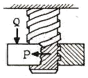
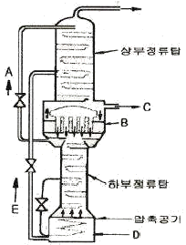
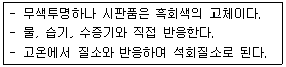
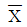

가스기능장 (2017-03-05 기출문제)
1과목: 임의 구분
1. 38[cmHg] 진공은 절대압력으로 약 몇 [kgf/cm2ㆍabs] 인가?
- 0.26
- 0.52
- 3.8
- 7.6
(정답률: 71%)

2. 액화석유가스 저장탱크를 지하에 설치할 경우에는 집수구를 설치하여야 한다. 이에 대한 설명으로 옳은 것은?
- 집수구는 가로, 세로, 깊이가 각각 50[cm] 이상의 크기로 한다.
- 집수관은 직경을 80[A] 이상으로 하고, 집수구 바닥에 고정한다.
- 검지관은 직경 30[A] 이상으로 하고, 집수구 바닥에 고정한다.
- 집수구는 저장탱크실 바닥면보다 높게 설치한다.
(정답률: 83%)
3. 압력 80[kPa], 체적 0.37[m3]을 차지하고 있는 이상 기체를 등온 팽창시켰더니 체적이 2.5배로 팽창하였다. 이 때 외부에 대해서 한 일은 약 몇 [Nㆍm] 인가?
- 2.71
- 2.71×102
- 2.71×103
- 2.71×104
(정답률: 67%)
4. 냉매의 구비조건 중 화학적 성질에 대한 설명으로 옳은 것은?
- 부식성이 있을 것
- 윤활유에 용해될 것
- 증기 및 액체의 점성이 클 것
- 인화 및 폭발의 위험성이 없을 것
(정답률: 89%)
5. 가연성가스(LPG 제외) 및 산소의 차량에 고정된 저장탱크 내용적 기준으로 옳은 것은?
- 저장탱크의 내용적은 10000[L]를 초과할 수 없다.
- 저장탱크의 내용적은 12000[L]를 초과할 수 없다.
- 저장탱크의 내용적은 15000[L]를 초과할 수 없다.
- 저장탱크의 내용적은 18000[L]를 초과할 수 없다.
(정답률: 85%)
6. 고압가스 냉동제조시설의 검사기준 중 내압 및 기밀시험에 대한 설명으로 틀린 것은?
- 내압시험은 설계압력의 1.5배 이상의 압력으로 한다.
- 내압시험에 사용하는 압력계는 문자판의 크기가 75[mm] 이상으로서 그 최고눈금은 내압시험압력의 1.5배 이상 2배 이하로 한다.
- 기밀시험압력은 상용압력 이상의 압력으로 한다.
- 시험할 부분의 용적이 5[m3]인 것의 기밀시험 유지 시간은 480분이다.
(정답률: 75%)
7. 아세틸렌을 압축하는 Reppe 반응장치의 구분에 해당하지 않는 것은?
- 비닐화
- 에티닐화
- 환중합
- 니트릴화
(정답률: 78%)
8. LPG 공급 시 강제 기화기를 사용할 경우의 특징으로 틀린 것은?
- 설치장소가 많이 필요하다.
- 공급가스의 조성이 일정하다.
- 한냉 시에도 충분히 기화된다.
- 설비비 및 인건비가 절감된다.
(정답률: 81%)
9. 다음 [그림]과 같이 수직 하방향의 하중 Q[kg]을 받고 있는 사각나사의 너트를 그림과 같은 방향의 회전력 P[kg]을 주어 풀고자 한다. 필요한 힘 P를 구하는 식은? (단, 나사는 1줄 나사이며, 나사의 경사각은 α, 마찰각은 ρ이다.)

- P=Qㆍtan(α-ρ)
- P=Qㆍtan(α+ρ)
- P=Qㆍtan(ρ-α)
- P=Qㆍtan(1-(ρ/α))
(정답률: 87%)
10. 산소 용기에 산소를 충전하고 용기 내의 온도와 밀도를 측정하였더니 각각 20[℃], 0.1[kg/L] 이었다. 용기 내의 압력은 약 얼마인가? (단, 산소는 이상기체로 가정한다.)
- 0.075 기압
- 0.75 기압
- 7.5 기압
- 75 기압
(정답률: 58%)
11. 고압가스 관련설비에 해당하지 않는 것은?
- 냉각살수설비
- 기화장치
- 긴급차단장치
- 독성가스 배관용 밸브
(정답률: 78%)
12. 산업통상자원부장관은 도시가스사업법에 의하여 도시가스사업자에게 조정명령을 내릴 수 있다. 다음중 조정명령 사항이 아닌 것은?
- 가스검사 기관의 조정
- 도시가스의 열량, 압력의 조정
- 가스공급시설 공사계획의 조정
- 도시가스요금 등 공급조건의 조정
(정답률: 67%)
13. 역화방지장치를 반드시 설치하여야 할 위치가 아닌것은?
- 아세틸렌 충전용 지관
- 아세틸렌의 고압건조기와 충전용교체 밸브사이의 배관
- 가연성가스를 압축하는 압축기와 오토클레이브와의 사이의 배관
- 아세틸렌을 압축하는 압축기의 유분리기와 고압건조기와의 사이
(정답률: 81%)
14. 고압 수소용기가 파열사고를 일으켰을 때 사고의 원인으로서 가장 거리가 먼 것은?
- 용기 가열
- 과잉 충전
- 압력계 타격
- 폭발성 가스 혼입
(정답률: 86%)
15. 외압이나 지진 등에 대하여 가요성이 가장 우수한 주철관 이음은?
- 메커니컬 이음
- 소켓 이음
- 빅토리 이음
- 플랜지 이음
(정답률: 85%)
16. 다음 [그림]은 공기의 분리장치로 쓰이고 있는 복식 정류탑의 구조도이다. 흐름 C의 액의 성분과 장치 D의 명칭을 옳게 나타낸 것은?

- C : O2가 풍부한 액, D : 증류드럼
- C : 산소, D : 증류드럼
- C : N2가 풍부한 액, D : 응축기
- C : N2, D : 증류드럼
(정답률: 77%)
17. 기체의 압력(P)이 감소하여 압력(P)이 0인 한계상황에 기체 분자의 상태는 어떻게 되는가?
- 분자들은 점점 더 넓게 분산된다.
- 분자들은 점점 더 조밀하게 응집된다.
- 분자들은 아무런 영향을 받지 않는다.
- 분자들은 분산과 응집의 균형을 유지한다.
(정답률: 84%)
18. 시간당 10[m3]의 LP가스를 길이 100[m] 떨어진 곳에 저압으로 공급하고자 한다. 압력손실이 30[mmH2O]이면 필요한 최소 배관지름은 약 몇 [mm] 인가? (단, Pole 상수는 0.7, 가스비중은 1.5이다.)
- 20[mm]
- 30[mm]
- 40[mm]
- 50[mm]
(정답률: 49%)
19. 고압가스 안전관리법에서 신규검사 후 경과연수가 15년 미만 된 500리터 이상의 이음매 없는 용기의 재검사 주기는 몇 년마다 하여야 하는가?
- 1
- 2
- 3
- 5
(정답률: 74%)
20. 공식(孔蝕)의 특징에 대한 설명으로 옳은 것은?
- 발견하기 쉽다.
- 부식속도가 느리다.
- 양극반응의 독특한 형태이다.
- 균일부식의 조건과 동반하여 발생한다.
(정답률: 81%)
2과목: 임의 구분
21. 수소(H2) 가스의 공업적 제조법이 아닌 것은?
- 물의 전기분해법
- 공기액화 분리법
- 수성가스법
- 석유의 분해법
(정답률: 73%)
22. 이상기체 상태방정식과 관련 없는 법칙은?
- Raoult의 법칙
- Charles의 법칙
- Avogadro의 법칙
- Gay-Lusaac의 법칙
(정답률: 73%)
23. 가스배관 경로 선정 시 고려할 사항으로 가장 거리가 먼 것은?
- 가능한 한 옥외에 설치한다.
- 가능한 한 최단 거리로 한다.
- 구부러지거나 오르내림을 적게 한다.
- 건축물 내의 배관은 가능한 한 은폐하거나 매설한다.
(정답률: 86%)
24. 표준기압 1[atm]은 몇 [kgf/cm2] 인가? (단, Hg의 밀도는 13595.1[kg/m3], 중력가속도는 9.80665[m/s2]이다.)
- 0.9806
- 1.0332
- 1013.25
- 10332
(정답률: 85%)
25. 가스도매사업의 가스공급시설인 배관을 지하에 매설하는 경우의 기준에 대한 설명으로 옳은 것은?
- 배관은 그 외면으로부터 수평거리로 건축물까지 1.2[m] 이상을 유지한다.
- PE 배관의 굴곡허용반경은 외경의 30배 이상으로 한다.
- 지표면으로부터 배관 외면까지의 매설깊이는 산이나 들의 경우에는 1.2[m] 이상으로 한다.
- 도로가 평탄할 경우의 배관의 기울기는 1/500~1/1000 정도의 기울기로 설치한다.
(정답률: 79%)
26. 플레어스택 설치기준에 대한 설명 중 틀린 것은?
- 파일럿버너를 항상 꺼두는 등 플레어스택에 관련된 폭발을 방지하기 위한 조치가 되어 있는 것으로 한다.
- 긴급이송설비로 이송되는 가스를 안전하게 연소시킬 수 있는 것으로 한다.
- 플레어스택에서 발생하는 복사열이 다른 제조시설에 나쁜 영향을 미치지 않도록 안전한 높이 및 위치에 설치한다.
- 플레어스택에 발생하는 최대열량에 장시간 견딜 수있는 재료 및 구조로 되어 있는 것으로 한다.
(정답률: 87%)
27. 고압가스 운반 시 가스누출사고가 발생하였다. 이 부분의 수리가 불가능한 경우 재해발생 또는 확대를 방지하기 위한 조치사항으로 가장 거리가 먼 것은?
- 착화된 경우 소화작업을 실시한다.
- 상황에 따라 안전한 장소로 운반한다.
- 비상 연락망에 따라 관계 업소에 원조를 의뢰한다.
- 부근의 화기를 없앤다.
(정답률: 82%)
28. LPG의 일반적인 특징에 대한 설명으로 틀린 것은?
- 연소속도가 늦고 발화온도는 높다.
- 연소 시 다량의 공기가 필요하다.
- 액체 상태의 LP가스는 물보다 무겁다.
- 상온에서 기체로 존재하지만 가압시키면 쉽게 액화가 가능하다.
(정답률: 78%)
29. 비상공급시설 설치신고서에 첨부하여 시장, 군수, 구청장에게 제출해야 하는 서류가 아닌 것은?
- 안전관리자의 배치현황
- 설치위치 및 주위상황도
- 비상공급시설의 설치사유서
- 가스사용 예정시기 및 사용예정량
(정답률: 78%)
30. 안전관리자는 해당분야의 상위 자격자로 할 수 있다. 다음 중 가장 상위인 자격은?
- 가스기능사
- 가스기사
- 가스산업기사
- 가스기능장
(정답률: 93%)
31. 안전밸브에 설치하는 가스방출관의 방출구 설치위치로서 옳은 것은?
- LPG 저장탱크의 정상부에서 1.5[m] 또는 지면에서 5[m] 중 높은 위치 이상
- LPG 저장탱크의 정상부에서 2[m] 또는 지면에서 5[m] 중 높은 위치 이상
- LPG 저장탱크의 정상부에서 2[m] 또는 지면에서 10[m] 중 높은 위치 이상
- LPG 저장탱크의 정상부에서 5[m] 또는 지면에서 10[m] 중 높은 위치 이상
(정답률: 77%)
32. 도시가스사업법에서 정의하는 액화가스를 옳게 나타낸 것은?
- 상용의 온도 또는 35[℃]의 온도에서 압력이 0.1[MPa] 이상이 되는 것
- 상용의 온도 또는 35[℃]의 온도에서 압력이 0.2[MPa] 이상이 되는 것
- 상용의 온도 또는 35[℃]의 온도에서 압력이 1[MPa] 이상이 되는 것
- 상용의 온도 또는 35[℃]의 온도에서 압력이 2[MPa] 이상이 되는 것
(정답률: 79%)
33. 다음 [보기]의 특징을 가지는 물질은?

- CaC2
- P4S3
- NaOCl
- KH
(정답률: 88%)
34. 가스 압력게이지가 12[atmㆍg]을 가리키고 있을 때 절대압력으로는 약 얼마인가? (단, 이 때의 대기압은 750[mmHg] 이다.)
- 1.1[MPa]
- 1.2[MPa]
- 1.3[MPa]
- 1.4[MPa]
(정답률: 57%)
35. 암모니아 1[톤]을 내용적 50[L]의 용기에 충전하고자 한다. 필요한 용기는 몇 개인가? (단, 암모니아의 충전정수는 1.86 이다.)
- 11
- 38
- 47
- 20
(정답률: 79%)
36. 암모니아의 성상에 대한 설명으로 틀린 것은?
- 끓는점은 -33.3[℃] 이다.
- 녹는점은 -77.7[℃] 이다.
- 임계온도는 132.5[℃] 이다.
- 임계압력은 52.5[atm] 이다.
(정답률: 59%)
37. 폭굉유도거리(DID)가 길어질 수 있는 조건으로 옳은 것은?
- 압력이 높을수록
- 점화원의 에너지가 클수록
- 정상연소속도가 느린 혼합가스일수록
- 관 속에 방해물이 있거나 관경이 가늘수록
(정답률: 78%)
38. 50[kg]의 C3H8을 기화시키면 약 몇 [m3]가 되는가? (단, S.T.P 상태이고 C, H의 원자량은 각각 12, 1 이다.)
- 25.45
- 50.56
- 75.63
- 90.72
(정답률: 50%)
39. 제조가스 중에 포함된 불순물과 그로 인한 장해에 대한 설명으로 가장 옳은 것은?
- 황, 질소화합물은 배관, 정압기 기구의 노즐에 부착하여 그 기능을 저하시키거나 저해하게 된다.
- 물은 가스의 승압, 냉각에 의한 물, 얼음, 물과 탄화수소와의 수화물을 생성하여 배관 등의 부식을 조장하고 배관, 밸브 등을 폐쇄시킨다.
- 나프탈렌, 타르, 먼지는 가스중의 산소와 반응하여 NO2로 되며, NO2는 불포화탄화수소와 반응하여 고무가 생성된다. 이 고무는 배관, 정압기, 기구의 노즐에 부착하여 그 기능을 저하시키고 저해하게 된다.
- 산화질소(NO), 고무는 연소에 의하여 아황산가스, 아초산, 초산이 발생하여 인체나 가축에 피해를 주며 가스기구, 배관, 정압기 등의 기물을 부식시킨다.
(정답률: 79%)
40. 길이 4[m], 지름 3.5[cm]의 연강봉에 4200[kgf]의 인장하중이 갑자기 작용하였을 때 충격하중에 의하여 늘어나는 인장길이는 약 몇 [mm] 인가? (단, E = 2.1×106[kgf/cm2] 이다.)
- 0.83
- 1.66
- 3.32
- 6.65
(정답률: 53%)
3과목: 임의 구분
41. 고압가스의 제조방법에 대한 설명으로 옳은 것은?
- 아세틸렌을 3.0[MPa]의 압력으로 압축하여 고압용기에 충전시켰다.
- 산소를 용기에 충전하는 때에는 용기와 밸브사이에는 가연성 패킹을 사용하지 아니하였다.
- 시안화수소의 안정제로 물을 사용하였다.
- 충전용 지관에는 탄소의 함유량이 0.33[%] 이하의 강을 사용하였다.
(정답률: 73%)
42. 표준상태에서 질소 5.6[L] 중에 있는 질소 분자수는 다음의 어느 것과 같은가?
- 0.5[g]의 수소분자
- 16[g]의 산소분자
- 1[g]의 산소원자
- 4[g]의 수소분자
(정답률: 73%)
43. 저압식 공기액화 분리장치에 탄산가스 흡착기를 설치하는 주된 목적은?
- 공기량 증가
- 축열기 효율 증대
- 팽창 터빈 보호
- 정제산소 및 질소 순도 증가
(정답률: 81%)
44. 액화탄산가스 100[kg]을 용적 50[L]의 용기에 충전시키기 위해서는 몇 개의 용기가 필요한가? (단, 가스충전계수는 1.47 이다.)
- 1
- 3
- 5
- 7
(정답률: 79%)
45. 도시가스사업자가 관계법에서 정하는 규모 이상의 가스공급시설의 설치공사를 할 때 신청서에 첨부할 서류항목이 아닌 것은?
- 공사계획서
- 공사공정표
- 공급조건에 관한 설명서
- 시공관리자의 자격을 증명할 수 있는 사본
(정답률: 82%)
46. 고압가스사업자는 안전관리규정을 언제 허가관청ㆍ 신고관청 또는 등록관청에 제출하여야 하는가?
- 완성 검사 시
- 정기 검사 시
- 허가 신청 시
- 사업 개시 시
(정답률: 84%)
47. 이상기체에 대한 설명으로 틀린 것은?
- 완전탄성체로 간주한다.
- 반데르발스 힘에 의하여 분자가 운동한다.
- 분자사이에는 아무런 인력도 반발력도 작용하지 않는다.
- 분자 자체가 차지하는 부피는 전체 계에 대하여 무시한다.
(정답률: 68%)
48. 도시가스사업 구분에 따라 선임하여야 할 안전관리자별 선임 인원과 선임 가능한 자격의 연결이 틀린것은? (단, 안전관리자의 자격은 선임 가능한 자격 중 1개만이 제시되어 있다.)
- 가스도매사업 : 안전관리책임자 - 사업장마다 1인- 가스기술사
- 가스도매사업 : 안전관리원 - 사업장마다 10인 이상 - 가스기능사
- 일반도시가스사업 : 안전관리책임자 - 사업장마다 1인 - 가스기능사
- 일반도시가스사업 : 안전관리원 - 5인 이상(배관길이가 200[km] 이하인 경우) - 가스기능사
(정답률: 81%)
49. 가스크로마토그래피(gas chromatography)의 구성요소가 아닌 것은?
- 분리관(컬럼)
- 검출기
- 기록계
- 파라듐관
(정답률: 84%)
50. 액화석유가스 특정사용자 중 보험가입대상이 되는 자는?
- 전통시장에서 최고 50[kg] 이상의 LPG를 저장하는 자
- 지하실에서 영업장의 면적이 50[m2] 미만인 영업소 경영자
- 집단급식소로서 상시 1회 30명 이상을 수용할 수있는 급식소를 운영하는 자
- 저장능력이 250[kg] 이상인 저장시설을 갖춘 자
(정답률: 79%)
51. 대량의 LPG를 얻는 방법이 아닌 것은?
- 유정가스에서 얻는다.
- 개질가스에서 얻는다.
- 석탄광가스에서 얻는다.
- 접촉개질 장치에서 발생되는 분해가스에서 얻는다.
(정답률: 79%)
52. 고압가스 특정제조 시설에서 산소의 저장능력이 4만[m3]를 초과한 경우 제2종 보호시설까지의 안전거리는 몇 [m] 이상을 유지하여야 하는가?
- 8
- 12
- 14
- 16
(정답률: 62%)
53. 긴급차단장치의 조작 동력원은 차단밸브의 구조에 따라 다음과 같이 분류된다. 다음 중 이에 속하지 않는 것은?
- 액위
- 전기
- 기압
- 스프링
(정답률: 77%)
54. 용기부속품의 기호표시로 틀린 것은?
- LG : 액화석유가스를 충전하는 용기의 부속품
- AG : 아세틸렌가스를 충전하는 용기의 부속품
- PG : 압축가스를 충전하는 용기의 부속품
- LT : 초저온용기 및 저온용기의 부속품
(정답률: 83%)
55. 설비배치 및 개선의 목적을 설명한 내용으로 가장 관계가 먼 것은?
- 재공품의 증가
- 설비투자 최소화
- 이동거리의 감소
- 작업자 부하 평준화
(정답률: 77%)
56. 검사의 종류 중 검사공정에 의한 분류에 해당되지않는 것은?
- 수입검사
- 출하검사
- 출장검사
- 공정검사
(정답률: 88%)
57. 3σ법의

관리도에서 공정이 관리 상태에 있는 데도 불구하고 관리상태가 아니라고 판정하는 제1종 과오는 약 몇 [%] 인가?- 0.27
- 0.54
- 1.0
- 1.2
(정답률: 59%)
58. 부적합품률이 20[%]인 공정에서 생산되는 제품을 매시간 10개씩 샘플링 검사하여 공정을 관리하려고 한다. 이 때 측정되는 시료의 부적합품 수에 대한 기댓값과 분산은 약 얼마인가?
- 기댓값 : 1.6, 분산 : 1.3
- 기댓값 : 1.6, 분산 : 1.6
- 기댓값 : 2.0, 분산 : 1.3
- 기댓값 : 2.0, 분산 : 1.6
(정답률: 63%)
59. 워크 샘플링에 관한 설명 중 틀린 것은?
- 워크 샘플링은 일명 스냅리딩(snap reading)이라 불린다.
- 워크 샘플링은 스톱워치를 사용하여 관측대상을 순간적으로 관측하는 것이다.
- 워크 샘플링은 영국의 통계학자 L.H.C. Tippet가 가동률 조사를 위해 창안한 것이다.
- 워크 샘플링은 사람의 상태나 기계의 가동상태 및 작업의 종류 등을 순간적으로 관측하는 것이다.
(정답률: 72%)
60. 설비조전조직 중 지역보전(area maintenance)의 장ㆍ단점에 해당하지 않는 것은?
- 현장 왕복 시간이 증가한다.
- 조업요원과 지역보전요원과의 관계가 밀접해 진다.
- 보전요원이 현장에 있으므로 생산 본위가 되며 생산의욕을 가진다.
- 같은 사람이 같은 설비를 담당하므로 설비를 잘 알며 충분한 서비스를 할 수 있다.
(정답률: 83%)
1 [kgf/cm2ㆍabs]는 대기압(1 atm)과 같으므로, 38[cmHg] 진공의 절대압력은
1 atm - 38[cmHg] = 0.79 [kgf/cm2ㆍabs]
입니다.
하지만 문제에서는 단위를 [kgf/cm2ㆍabs]로 요구하고 있으므로, 이 값을 대기압(1 atm)으로 나누어주면 됩니다.
0.79 [kgf/cm2ㆍabs] ÷ 1 atm ≈ 0.52 [kgf/cm2ㆍabs]
따라서 정답은 "0.52"입니다.